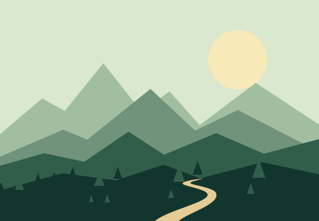

Senderismo en la Sierra de Guadarrama
Sal de la
ciudad.
Rutas guiadas de un día para descubrir la sierra en grupos pequeños. Empieza por una caminata a tu ritmo.
Reservar plaza
Próxima salida
Circular de los Miradores
-
Cercedilla
Punto de encuentro en la estación.
-
Sábado ·
FECHA DE EJEMPLO · Grupo reducido.
-
3 horas
7 km · Nivel iniciación.